Proximal Operators¶
Definition¶
Let  be a proper convex function mapping the normed space
be a proper convex function mapping the normed space  to the extended real number line . The proximal
operators of the functional is mapping from 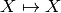. It
is denoted as 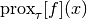 with 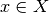 and defined by
to the extended real number line . The proximal
operators of the functional is mapping from 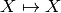. It
is denoted as 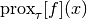 with 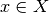 and defined by
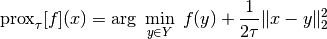
The shorter notation 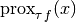) is also common.
Properties¶
Some properties which are useful to create or compose proximal operators:
Separable sum
If is separable across variables, i.e.  ,
then
,
then
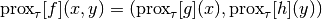
Post-composition
If 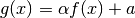 with , then
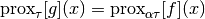
Pre-composition
If 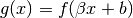 with 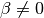, then
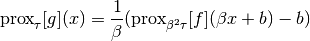
Moreau decomposition
This is also know as the Moreau identity
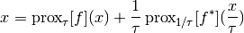
where  is the convex conjugate of .
is the convex conjugate of .
Convec conjugate
The convex conjugate of is defined as
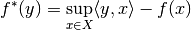
where  denotes inner product. For more
on convex conjugate and convex analysis see [Roc1970]
or Wikipedia.
denotes inner product. For more
on convex conjugate and convex analysis see [Roc1970]
or Wikipedia.
For more details on proximal operators including how to evaluate the proximal operator of a variety of functions see [PB2014].
Indicator function¶
Indicator functions are typically used to incorporate constraints. The
indicator function for a given set  is defined as
is defined as
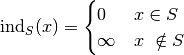
Special indicator functions
Indicator for a box centered at origin and with width  :
:
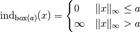
where denotes the maximum-norm.